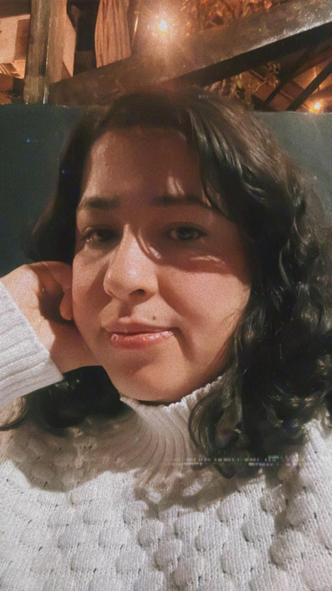

Sobre Mim 🌻
Trabalhei ao longo de 9 anos em uma empresa que testava equipamentos de medição e prestava serviços de
engenharia, mas sempre gostei de lógica e de programação e conversando com alguns amigos da área decidi
começar do zero em uma nova carreira. Então fiz um bootcamp, mudei de emprego, mas sentia que precisava
me aprofundar mais no tema então comecei uma nova graduação. Dai entrei em um estágio que achei que seria
super importante pro meu desenvolvimento e minha carreira e aqui estou!
Sou casada há 6 anos, já me mudei três vezes ao longo desse período e passei por quase todosos bairros
do abc paulista. Nesses 6 anos também adotamos três lindos gatinhos que aprontam muito mas também tornam
nossos dias muito mais divertidos.
Gosto de fotografar, é um dos meus hobbies favoritos. Também gosto de sair e sempre que posso conhecer
lugares novos. Gosto também de ler quando tenho um tempo livre, mas ultimamente não tenho tido muito tempo,
o ultimo livro que li foi "Antes que o Café Esfrie" e achei uma história incrível. Além dos livros também
gosto de ver séries, animes, doramas e filmes. No momento estou vendo "Attack on Titan" e "One Piece", que
é meu anime favorito, o ultimo filme que assisti foi "Deadpool e Wolverine".
Além disso gosto muito de ouvir musica e as vezes tiro um tempo para jogar videogame, gosto de RPGs como
"Zelda", estou jogando "Breath of the Wild" mas sou do tipo que joga sem pressa então mal cheguei na
metade. Ah por falar nisso esqueci de mencionar o nome dos meus gatinhos que são: Zelda, Anakin e Luffy.
Acho que com isso já dá pra me conhecer um pouco! 😄